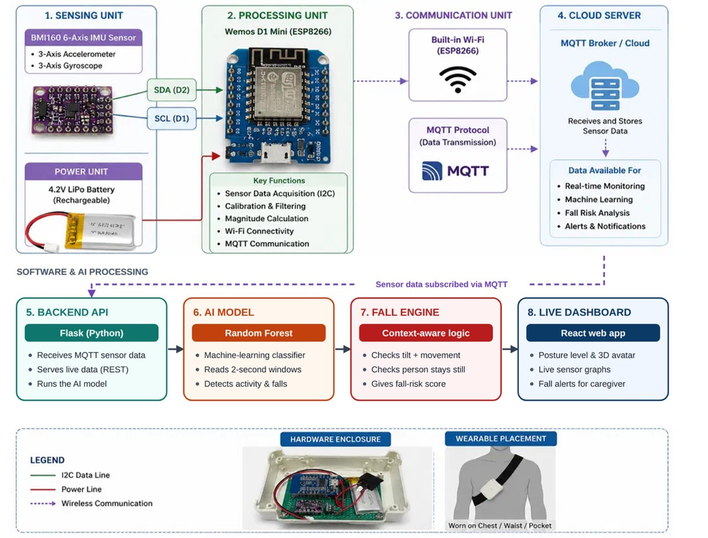

Context-Aware Activity Recognition
A wearable IoT system that detects falls in elderly people in real time and explains every decision.
 Built byMember 1: M T K Chathuri
Built byMember 1: M T K ChathuriWhat this component is
Context-Aware Activity Recognition is the part of AegisCare that watches how an elderly person moves and decides whether they have fallen. It is built as a complete chain, from a sensor on the body to a dashboard in front of the caregiver.
A Fall Engine confirms a fall only when three things agree: the classifier says “fall” with at least 60% confidence, the body tilt reaches 30° or more, and the person then stays tilted and still. The result is shown live on a React dashboard with the posture level, a 0–100 fall-risk score and a plain-language explanation of why the system decided what it did, so the caregiver gets fewer false alarms and a reason for each alert.
How it works
- Wearable nodeA BMI160 motion sensor on a Wemos D1 Mini (ESP8266) is calibrated, and its readings are smoothed.
- MQTT streamSix-axis data is sent about 10 times per second over MQTT to a cloud broker.
- Flask serviceThe backend picks up the data and groups it into 20-sample windows, then extracts 52 statistical features from each window.
- Random Forest classifierTrained on recorded movements from 10 participants, it labels each window as standing, walking, or a fall forward, backward, left or right.
- Fall EngineConfirms a fall only when classifier confidence is 60% or more, body tilt is 30° or more, and the person then stays tilted and still.
- React dashboardShows the posture level, a 0–100 fall-risk score and a plain-language explanation of every decision.
Try the Fall Engine decision rule
Move the sliders to see why one signal alone never raises an alarm. A fall is confirmed only when all three checks agree.
This demonstrates the published decision rule only. The risk score shown here is illustrative and is not the trained model.
The research gap
Fewer false alarms, and a reason for every alert
Existing wearable fall detectors have three weaknesses. Most make one decision per movement window, either from a fixed threshold or from a machine-learning label, and do not separate “this looks like a fall” from “a fall actually happened”. As a result, bending, sitting or stumbling can trigger false alarms.
Many studies report very high accuracy using random train/test splits, where overlapping windows from the same recording appear in both sets, so the results are inflated and do not show how the model performs on a person it has never seen. Finally, most systems output only a label or probability, with no explanation the caregiver can check.
This research fills that gap with an explainable pipeline in which the classifier is only one piece of evidence. Measured tilt and a stay-down check must also agree, and every alert comes with its reasons.
System diagram

Click to enlarge